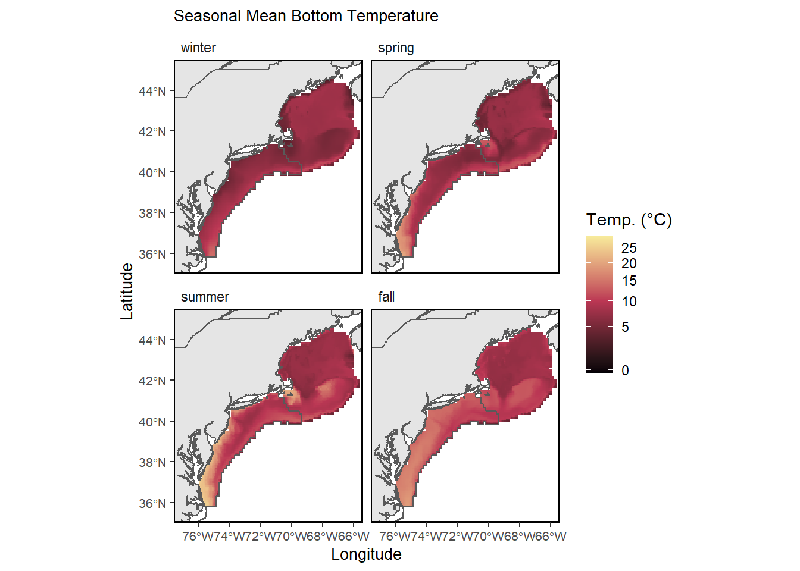
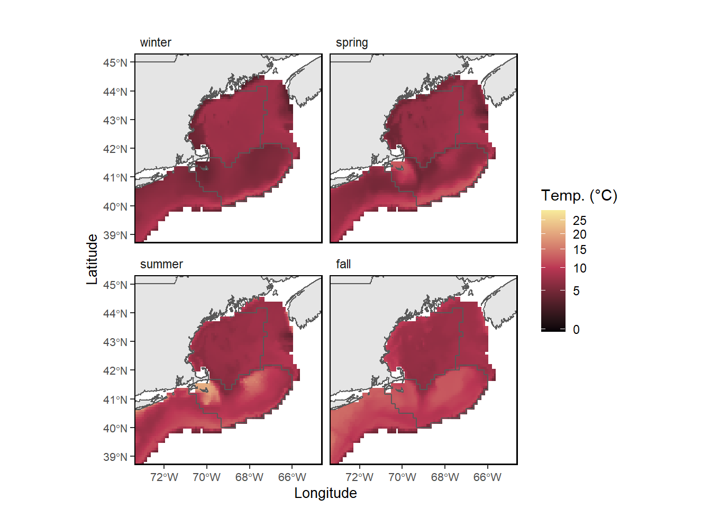

43 Bottom temperature - Seasonal Gridded
Last updated March 07, 2025
Description: Seasonal mean bottom temperatures on the Northeast Continental Shelf between 1959 and 2024 in a 1/12° grid.
Contributor(s): Joseph Caracappa, Vincent Saba, Zhuomin Chen
Affiliations: NEFSC
Indicator Family:
Indicator Category:
Synthesis Theme:
43.1 Introduction to Indicator
The bottom temperature product is in a horizontal 1/12 degree grid between 1959 and 2024 and is made of daily bottom temperature estimates from:
Bias-corrected ROMS-NWA between 1959 and 1992 which was regridded in the same 1/12degree grid as GLORYS using bilinear interpolation; Years 1993 through fall 2024 are from CMEMS GLORYS12V1 global reanalysis bottom temperature.
43.2 Key Results and Visualizations
Maps of seasonal mean bottom temperature across NE shelf.
Mid-Atlantic

New England

43.3 Implications
Bottom temperature is a key environmental parameter in defining the habitat and metabolic conditions of demersal and benthic species. Interannual and seasonal changes in bottom temperature can provide significant indicators of species productivity, spatial distributions, or mortality. Long-term trends in bottom temperature are indicators of regional implications of global climate change and may be used in evaluating climate risk for fisheries management.
43.4 Indicator statistics
Spatial scale: Whole shelf
Temporal scale: Winter (Jan-Mar), Spring (April-June), Summer (July-Sept), Fall (Oct - Dec) from 1959-2024
Variable definitions
43.5 Get the data
Point of contact: joseph.caracappa@noaa.gov
ecodata dataset: ecodata::bottom_temp_model_gridded
Tech Doc link: https://noaa-edab.github.io/tech-doc/bottom_temp_model_gridded.html
43.5.1 Public Availability
Source data are publicly available.